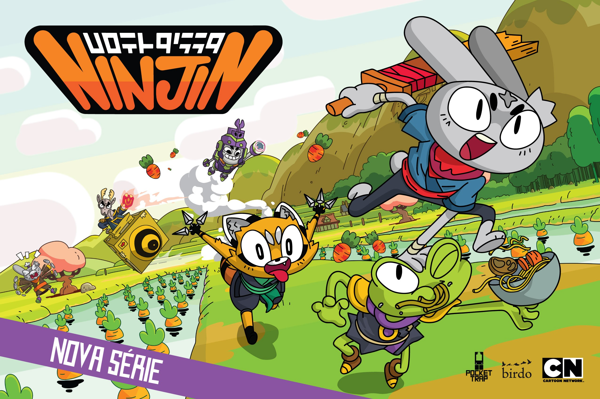

Ninjin é uma série de animação brasileira baseada no jogo "Ninjin: Clash of Carrots". A história acompanha um coelho ninja muito empolgado que, junto com seus amigos, parte em uma aventura para recuperar as cenouras roubadas pelo vilão Shogun Moe.